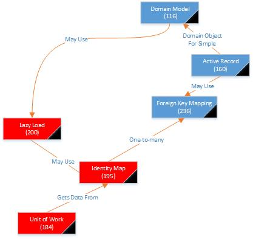
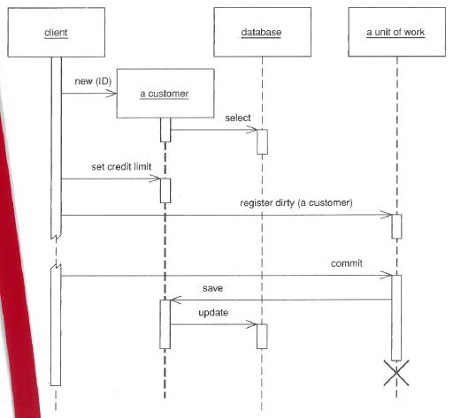

Behavioral Patterns
Lazy Load, Unit of Work and Identity Map
Where Are We?

Lazy Load
Read the book together!
Concurrency Issues
- When we read data, hold it in memory, and modify it, we have to worry about how to write it back
- We may have only modified a little bit and not want to write the whole thing back out
- We have to worry about what happens if someone else (another object, another thread, another system) is doing the same thing
- We may want to ensure that only one such object exists at any point in time
Unit Of Work
“Maintains
a list of object affected by a business transaction and coordinates the
writing out of changes and the resolution of concurrency patterns”
Object with these kinds of operations:
- registerNew(object)
- registerDirty(object)
- registerClean(object)
- registerDeleted(object)
- commit()
Big Picture
- As soon as you start doing something to an object that will eventually get persisted, register it with the unit of work.
- Every time you change it, tell the unit of work
- When you are done, tell the unit of work to commit the changes
- If you are worried that other people are changing an object you are using, register that object, too.
- Can
also help with ensuring referential integrity by persisting fields in
the necessary order (if the DB checks referential integrity before the
commit of a transaction)
What Does UofW Do on Commit?
- Opens a transaction
- Does concurrency checking (more on that later)
- Writes the changes to the DB
- Commits the change
The challenge is figuring out how the UofW knows what has changed . . .
What Objects to track?
- Caller Registration
- User of an object registers it with the unit of work
- Object Registration
- The object itself knows to register itself by calling registerClean(object) at creation
Caller Registration
- User of the object registers the object with the UofW when it changes something
- User of the object persists

- Allows people to have objects that change without persisting. (is that a good idea?)
- What happens if the user forgets to register dirty?
Object Registration
- Object communicates with UofW as appropriate
- Client still calls commit (really?)�(How does he find the UofW object?)

- Developer of object could still forget to include registerDirty
- Could we automatically generate that?
- Aspect Oriented programming!
Unit Of Work Controller
- UofW is responsible for everything
- UofW reads the object and holds a copy of the clean version
- When asked to commit, UofW compares dirty to clean to infer what needs to be persisted
“A
hybrid approach is to take copies only of changed objects. This
requires registration, but it supports selective update and greatly
reduces the overhead of the copy of there are many more reads than
updates.”
Object Creation
What if we want to create an object that won’t be persisted (transient objects)
- Caller registration makes this easy
- Object registration - transient constructor that doesn’t register the unit of work
- Special Case of UofW that does nothing with a commit
- This gets to an important point - how are the objects finding their UofW? (next slide)
How Do We Find the Right UofW object?
- A thread-scoped Registry (480)
- Pass the UofW to the object that needs it (Strategy Pattern)
- Allows different behavior in different situations (ex. test vs. production)
“In either case make sure that more than one thread can’t get access to a Unit of Work - there lies the way to madness”
- Why?
- Does that limit how we can spread functionality across threads?
Batch Updates
If your DB is remote, batch update lets you send a sequence of sql statements in one unit.
UofW is the obvious place to build them and to deal with any possible failures
UofW Isn’t Just for Databases
We can use UofW for any transactional resource
- Message queues
- Transaction monitors - did you google that?
- Disconnected data sources
Identity Map
“Ensures
that each object gets loaded only once by keeping every loaded object
in a map. Looks up objects using the map when referring to them.”
Is this the way you would build it:
“When
you load an object from the from the database, you first check the
map. If there’s an object in it that corresponds to the one
you’re loading, you return it. If not, you go to the database,
putting the objects into the map for future reference as you load them.”
Who is “you” in that description?
Choice of Keys
- Primary Key
- Good if it is a single column and immutable
- What if the object spans tables?
- Surrogate vs natural keys?
- What do we do if the key spans columns?
Explicit vs. Generic Identity Map
- Explicit
- Finders for each object type directly interface with the Identity Map
- Requires new finder for each type of object being tracked
- Compile time checking for object types
- Would you really have one big identity map class or one for each type?
- How many identity map objects are there?
- If we have one for each type, what would you want to inherit from a superclass?
- Generic
- One finder method for every kind of object (params are type and key)
- He claims this is infinitely reusable (do you believe him?)
- Requires all types to have the same key type
- Motivates Identity Field pattern for keys (All keys are members of the same class)
How Many Identity Maps Should There Be?
One Per Class or Per Table (which obeys our layer architecture?)
- What if there is inheritance?
- Single map per inheritance tree
- Makes polymorphism work more smoothly
- Depends on which pattern you used to map objects to the db
One Per Session
Where To Put Them
- Each session needs its own Identity Map
- If you have a UofW, that is the obvious place to put it
- If not, a Registry tied to the session can work
- Why one per session?
- We would need “transactional protection” otherwise (what the . . .?)
- Use the object DB as a transactional cache
- Might give a performance benefit
- Why would we even identity map them?
“Even
if you’re inclined to have only one Identity Map you can split it into
two along read-only and updatable lines. You can avoid clients having
to know which is which by providing an interface that checks both maps.”